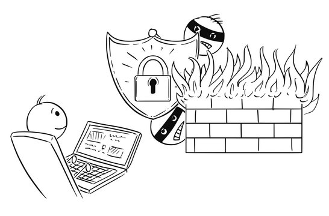
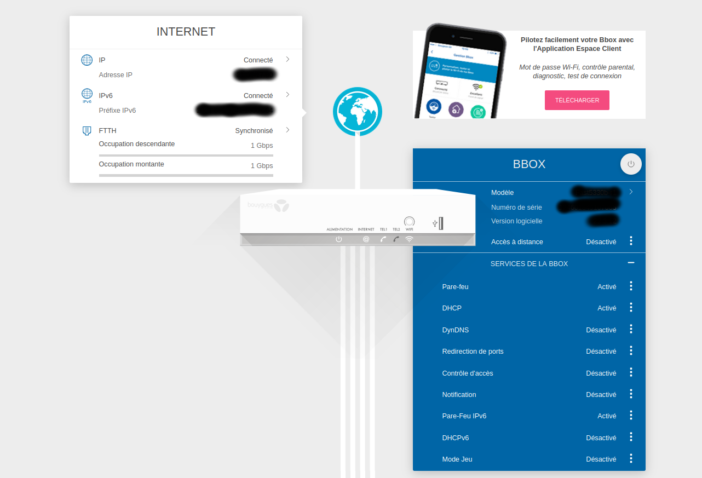
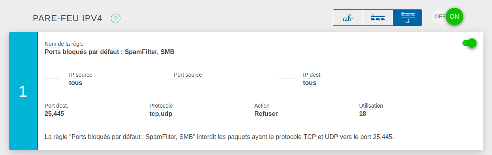

Firewall
- MON
- 2022-2023
- temps 2
- Firewall
- Réseau
- Packet Tracer
- Jean-Baptiste Durand
À quoi servent les pare-feu ? Et comment les mettre en place sur un serveur ?
Table des matières
- Table des matières
- À quoi servent les pare-feu ?
- Protéger ma box
- Protéger mon ordinateur
- Packet Tracer
- Liens Utiles
À quoi servent les pare-feu ?
Un Firewall (pare-feu) est un logiciel qui contrôle l'ensemble des flux entrant et sortant de l'appareil sur lequel il est connecté.
Aujourd’hui, la majorité des flux qui transitent sont des flux internet.
On peut donc résumer le firewall comme un logiciel qui va contrôler les connexions à Internet.
Pourquoi vouloir contrôler les flux internet ?
Prenons par exemple un contexte d'une entreprise, qui a des serveurs - un public et un privé - et un réseau local.
- Toute personne extérieure à l'entreprise, doit pouvoir avoir accès au serveur public (pour avoir accès à la page internet par exemple). Mais il ne faudrait pas qu'ils accèdent au serveur privé (un serveur qui peut contenir des informations confidentielles). Donc un pare-feu permettrait de vérifier que seule les personnes autorisées peuvent avoir certains accès privilégiés.
- Toute personne interne à l'entreprise peut - à priori - accéder à n'importe site web, en particulier les malveillants. Ce qui peut mener ces utilisateurs à télécharger des malware et ainsi se faire hacker. Une entreprise pourrait contrôler les requêtes sortantes pour vérifier qu'elles accèdent seulement aux sites autorisés.
Remarque, si les employés de l'entreprise utilisent un VPN, il ne sera pas possible pour l'entreprise de filtrer les flux sortants, car le VPN agit comme un tunnel.
Où appliquer des firewall ?
- Dans le contexte de l'entreprise, le pare-feu pourrait se placer sur la box de l'entreprise, sur l'interface externe (interface qui relie la box au reste du monde).
- Dans un contexte d'un aéroport où il y a un réseau public, et un réseau privé - pour permettre au clients d'accéder à internet et aux employés de communiquer avec les avions. Le réseau sera composé de VLAN (Virtual Local Area Network) pour éviter d'avoir les clients sur le même réseau que les employés. Les pare-feu peuvent se placer sur les différentes interfaces des VLAN du switch.
Dans un monde où tout est sécurisé, chaque appareil devrait avoir son propre pare-feu, sur chacune de ses interfaces. Car si un utilisateur malveillant a réussi à contourner le pare-feu principal, tout ce qui est derrière peut-être vulnérable aux attaques.
Il faut toujours se demander à qui est ce que je peux faire confiance ? Aux personnes sur mon box ? Tout internet ? À priori, il faudrait faire confiance à personne - à part à soit même.
Protéger ma box
Pour protéger sa box, il faut d'abord que vous ayez un accès administrateur à votre box. Si personne n'a jamais été administrateur, il suffit souvent seulement de trouver le code d'accès sous la box.
Il faut se connecter sur la GUI de la box : (en étant connecté sur le réseau)
Si votre box est un modèle différent, il n'est pas compliqué de trouver l'adresse sur internet.
Pour ma part, j'ai une BBox, donc les exemples viendront de là.
Une fois arrivé sur la page d'administration, on trouve où est ce qu'on peut gérer les paramètres avancés de la box.
Puis en accédant aux pare-feu, on peut voir quels sont les filtres mis en place sur la box.
Ici, le pare-feu bloque toutes les connexions - UDP et TCP - sur les ports 25 et 445 de la box.
Protéger mon ordinateur
Dans quelle condition est-il intéressant de protéger son ordinateur ?
Si par exemple, vous êtes en train de travailler sur la prochaine release de votre serveur web. Vous faites tourner en local le serveur, pour faire vos test. Malheureusement, vous êtes actuellement dans un aéroport, en attendant votre avion vers Centrale Casablanca, et n'avez accès qu'à un réseau public où peuvent être connectés des personnes malveillantes. En faisant tourner votre serveur sur votre ordinateur, vous l'exposez à des potentiels tentatives d'intrusions.
Ayant un Ubuntu, je me suis concentré sur les technologies disponible pour mon OS.
Avant de commencer
Installation
Cet application est installée par défaut sur tous les appareils Ubuntu.
Elle peut sinon être installée par :
sudo apt-get install ufwUtilisation
Il faut avoir les droits root pour pouvoir accéder à cet application. J'ai utilisé une machine virtuelle Ubuntu, sur laquelle j'ai mis un pare-feu, et j'ai utilisé mon ordinateur pour tester la protection.
J'ai mis en place 2 applications sur 2 ports :
- Une application OpenSSH, pour pouvoir me connecter à distance à ma machine, sur le port 22
- Un serveur web Express sur le port 8080, un serveur qu'on veut rendre inaccessible de l'extérieur.
Pour voir si mes services fonctionnent, et sont accessibles de l'extérieur, j'ai utilisé nmap (cf explication de Thibault dessus) un outil de scan de port.
sudo nmap -A -T4 -p- 192.168.56.101-A permet d'avoir une détection de l'OS, des versions des logiciels, et le chemin qu'a pris les paquets
-T<0-5> permet de définir le timing de ping de la cible 5 est très rapide/0 est très lent
-p permet de choisir les ports ciblés, ex: -p22 / -p1-65535 / -p U:53,111,137,T:21-25,80,139,8080 / -p- permet de scanner tous les ports.
Ensuite l'adresse IP de la cible (il faut préciser -6 si c'est une IPv6), ou le nom de domaine.
Voici ce que j'ai obtenu après le scan
PORT STATE SERVICE VERSION
22/tcp open ssh OpenSSH 8.9p1 Ubuntu 3ubuntu0.1 (Ubuntu Linux; protocol 2.0)
8080/tcp open http Node.js Express framework
De plus, il est possible d'accéder au site web hébergé : http://192.168.56.101:8080
Donc par défaut, la machine virtuelle n'a pas protégé la connexion au site web.
Mise en place du pare-feu
Petit conseil
Petit conseil
Toutes les commandes nécessitent des droits root, pour éviter d'avoir à recopier sudo pour chacune des commandes, il est possible de se mettre en utilisateur root avec la commande :
sudo su rootIl ne faut pas faire de chose qu'on ne maîtrise pas en étant root
Pour sortir de root, on peut exécuter la commande
exitRègles par défaut
Tout d'abord, on va mettre en place des règles par défaut, pour les flux entrant et sortant :
sudo ufw default allow outgoing
sudo ufw default deny incomingOn autorise tous les flux sortant, et on interdit les flux entrant.
Attention
si vous pouvez seulement vous connecter via une connexion SSH au serveur, il ne faut surtout pas se déconnecter maintenant, car vous ne pourriez plus avoir accès à votre serveur.
Autoriser les connexions SSH
sudo ufw allow sshle port ssh étant par défaut le 22, cette commande autorise les connxions au port 22, si le port est différent (par exemple le 2222), il faut executer :
sudo ufw allow 2222/tcpOn peut aussi autoriser seulement les connexions ssh provenant d'une adresse IP - celle du sysadmin - pour plus de sécurité.
sudo ufw allow proto tcp from 202.54.2.5 to 172.24.13.45 port 22avec 202.54.2.5 l'IP du sysadmin et 172.24.13.45 l'IP du serveur.
Activer le pare-feu
Il faut executer la commande :
sudo ufw enablepour le désactiver, il faut exécuter :
sudo ufw disableUtiliser cette configuration
Maintenant qu'on a mis en place le pare-feu, qu'est ce qu'on accéder depuis l'extérieur ?
Refaisons un scan des ports du serveur (avec nmap) :
PORT STATE SERVICE VERSION
22/tcp open ssh OpenSSH 8.9p1 Ubuntu 3ubuntu0.1 (Ubuntu Linux; protocol 2.0)Heureusement, on a encore accès à SSH, et à priori, on n'a plus accès au site internet.
On peut vérifier en essayant : http://192.168.56.101:8080
-> on obtient une erreur, donc tout est bon, bravo, notre site n'est plus accessible depuis l'extérieur
Comment faire en sorte de quand même se connecter à distance au serveur, si on a des droits d'accès (pour se connecter en SSH)
Dans un contexte d'entreprise, on veut pas que notre serveur ne soit pas accessible par tous le monde, mais on aimerait que nos employés puissent y avoir accès à distance.
Il n'est pas possible d'accéder directement à la page web, car le port est fermé. Donc la seule option pour y accéder c'est une connexion SSH. Ça tombe bien, SSH c'est une technologie sécurisé, qui nécessite une authentification. On peut donner l'accès que à certains personnes, notamment les employés.
On va créer un tunnel SSH entre le serveur distant et la machine de l'employé, et on va demander de rediriger le port de la machine distante sur la machine locale :
ssh -L 8080:localhost:8080 username@serverLe paramètre -L permet la redirection de ports.
Maintenant, il est possible d'accéder à la page web, non pas avec : http://192.168.56.101:8080 mais avec http://localhost:8080
Packet Tracer
Pour ceux qui ont suivit le cours de Réseau, au temps 2, vous pouvez aussi essayer les pare-feu grâce à Packet Tracer.
Il est seulement possible de mettre en place un pare-feu pour les appareils d'extrémité de réseau, comme les ordinateurs et serveurs, mais il n'est pas possible de le faire pour une box.
Dans la partie Desktop de l'appareil, il y a une application, pour ajouter des règles de pare-feu pour les IPv4 et IPv6
Attention, dans la configuration du pare-feu, est demandé le Wildcard mask, qui est différent du subnet mask. L'idée du masque est la même mais, on a la relation : Subnet Mask = NOT Wildcard Mask :
par exemple,
subnet mask/27 = 255.255.255.224 = 11111111.11111111.11111111.11100000 = NOT 00000000.00000000.00000000.00011111 = NOT 0.0.0.31 = NOT Wildcard Mask
Liens Utiles
{kind=link}
Documentation sur les pare-feu sur les différents OS: